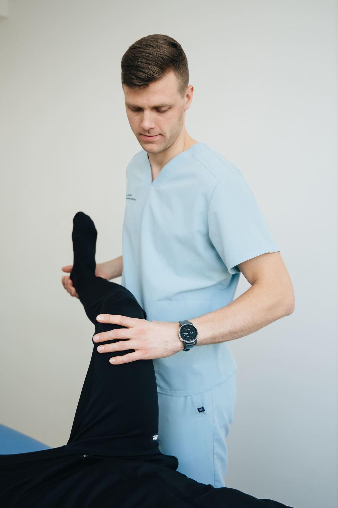
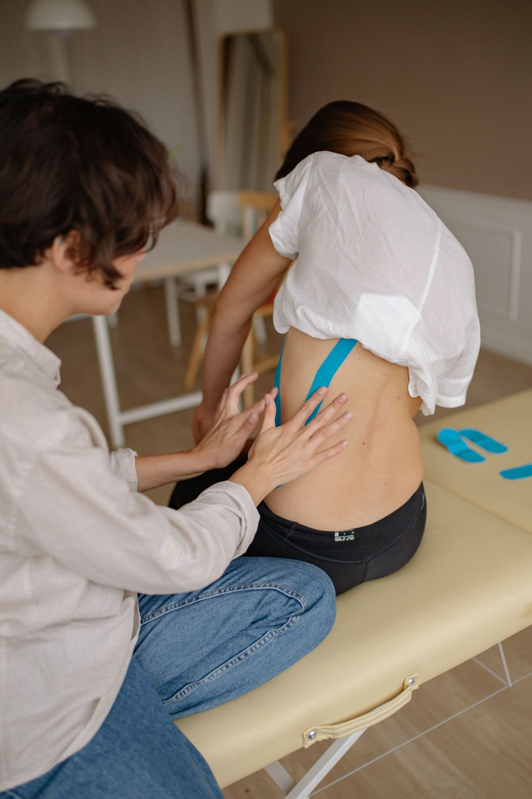
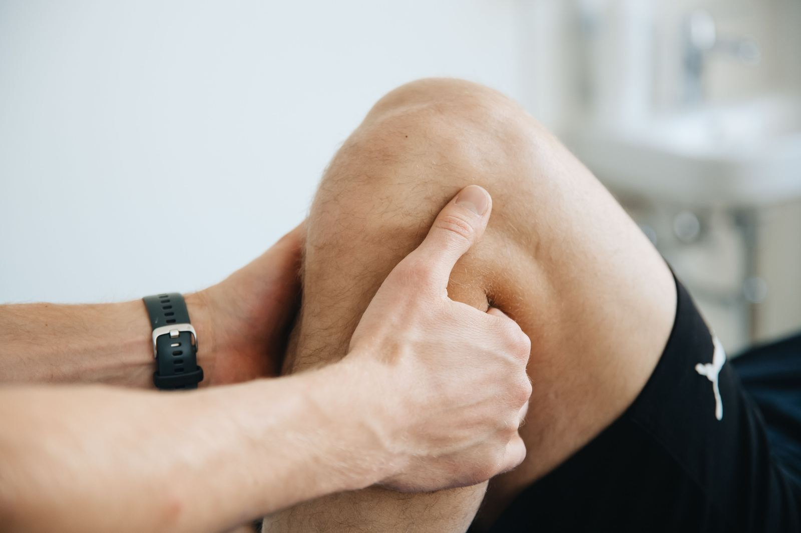
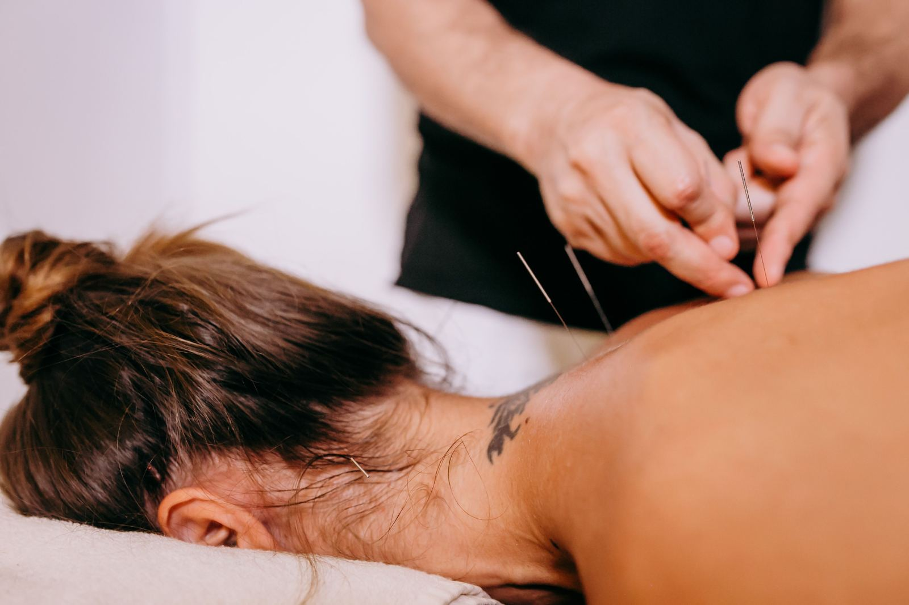
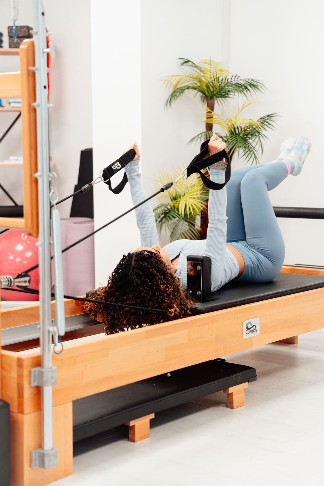

How we can help
Every treatment starts with a thorough assessment, followed by a plan tailored to your condition and goals. All services are available at the clinic, and most are also available as home visits.

Musculoskeletal Physiotherapy
Assessment and treatment of back and neck pain, joint pain, muscle strains and movement problems. We find what is causing your pain and use hands-on treatment and exercise to reduce it and restore normal movement.

Sports Physiotherapy
Treatment and rehabilitation of sports injuries such as sprains, strains and overuse injuries, with a focus on a safe return to sport and on preventing re-injury.
Pre- and Post-Surgical Rehabilitation
Exercise programs to prepare your body before surgery, and guided rehabilitation afterwards to rebuild strength, mobility and independence after procedures such as joint replacements and ligament repairs.
TMJ Disorders
Assessment and management of jaw pain, clicking, stiffness and related headaches, using manual techniques and targeted exercises. Rincy holds an additional certification in Temporomandibular Joint (TMJ) Disorders.

Manual Therapy
Hands-on techniques such as joint mobilisation and soft tissue work to ease pain, reduce stiffness and improve how your joints and muscles move.

Dry Needling
Fine needles placed into tight or sensitive muscle areas to help release tension and reduce pain, used alongside exercise and other treatment.

Exercise Rehabilitation and Pilates
Individual exercise and Pilates-based programs to build strength, balance, flexibility and core stability, supporting long-term recovery.
Telehealth
Online video consultations for assessment, exercise guidance and follow-up care. Ideal if you cannot attend in person.